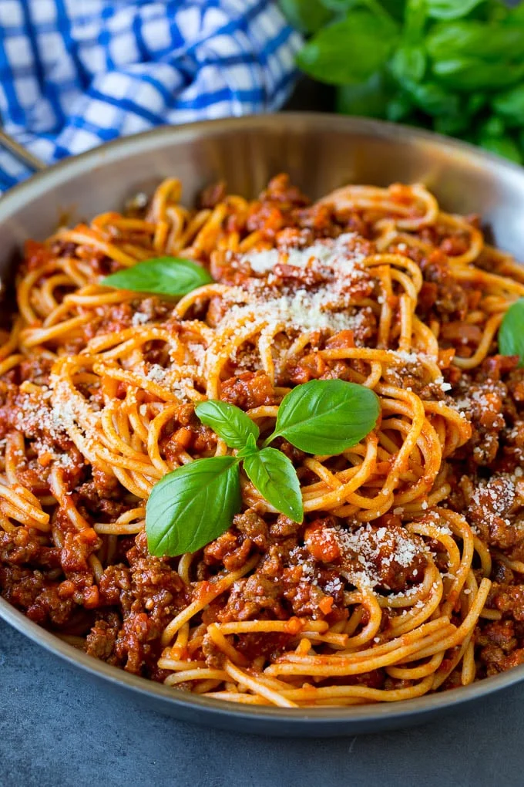
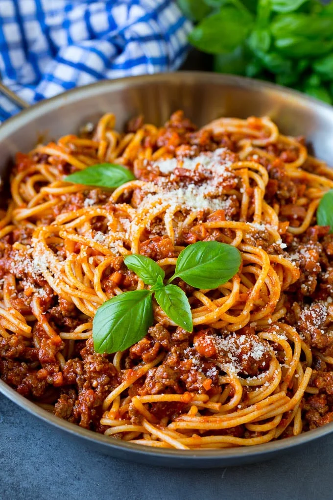

PASTA BOLOGNESE
5stars (8 ratings) // 8 comments
This post may contain affiliate links. Please see our privacy policy for details.
THE VERY best tasty Pasta bolognese!
So rich, so hearty, so perfect.
 

Pasta Bolognese is a classic Italian dish made with ground beef,
tomatoes and onions. This is a staple delicious dinner recipe that
is such a crowd pleaser
PASTA BOLOGNESE
Ingredients
Instructions
- Bring a large pot of salted water to a boil. Add pasta and cook al dente according to package instructions; drain. Reserve ½ cup pasta water
- Heat the olive oil in a large deep saute pan. Add the beef and season with salt and pepper. Brown the beef and break it into smaller pieces with the back of a wooden spoon until cooked through.
- Add onions and garlic; and season with oregano, basil and crushed red pepper. Saute for about 5 minutes until they soften. Add crushed tomatoes and tomato paste and pasta water. Mix to combine, bring mixture to a boil and then simmer on low covered for 30 minutes.
- Toss the pasta with the bolognese sauce and top with fresh basil, if desired.